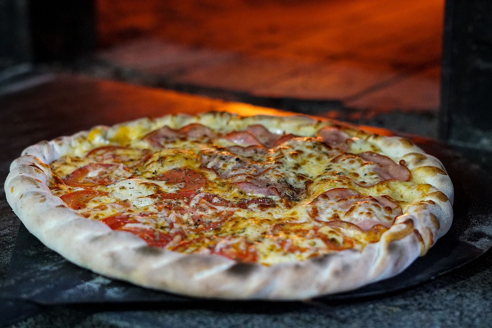

<div class="clearfix my-3">
  <div class="row row-cols-1 row-cols-sm-1 row-cols-md-2 row-cols-lg-3">
    <figure class="col-sm-12 col-md-6 col-lg-9 float-md-end">
      
      <figcaption>Eat at our famous historical Ristorante</figcaption>
    </figure>
    <p class="col-sm-12 col-md-6 col-lg-3"><strong>History of <span style="font-family: 'Great Vibes', cursive;">Il
          Gambero Rosso</span></strong><br>Innovation that led to
      flatbread
      pizza was the use of tomato as a topping. For some time after the tomato was brought to Europe from the Americas
      in the 16th century, it was
      believed by many Europeans to be poisonous, as are
      some other fruits of the Solanaceae (nightshade) family. By the late 18th century, it was common for the poor of
      the area around Naples to add tomato to their yeast-based flatbread, thus the pizza began.
      Antica Pizzeria Port'Alba in Naples, which is widely believed to be the world's first pizzeria</p>

    <p class="col-sm-12 col-md-6 col-lg-4">
      According to documents discovered by historian Antonio Mattozzi in the
      State
      Archive of Naples, in 1807, 54 pizzerias existed; listed were owners and addresses. In the second half of the
      nineteenth century the number of pizzerias increased to 120.
      <br>
      In Naples, two other figures connected to the trade existed – the pizza hawker (pizzaiuolo ambulante), who sold
      pizza but did not make it, and the seller of pizza "a oggi a otto", who made pizzas and sold them in return for
      a
      payment for seven days. The pizza marinara method has a topping of tomato, oregano, garlic, and extra
      virgin olive oil. It is named "marinara" because it was traditionally prepared by the seaman's wife 'la
      marinara"
      for her seafaring husband upon
      returning from fishing trips in the Bay of Naples.
    </p>

    <p class="col-sm-12 col-md-6 col-lg-4">
      The margherita is topped with modest amounts of tomato sauce, mozzarella, and fresh basil. It is widely
      attributed to baker Raffaele Esposito, who worked at the restaurant "Pietro... e basta così" ("Pietro... and
      that's enough"), established in 1880 and remaining in business as "Pizzeria Brandi". Though recent research
      casts
      doubt on this
      legend, the tale holds that, in 1889, he baked three different pizzas for the visit of King Umberto I and Queen
      Margherita of Savoy. The Queen's favorite was a pizza evoking the colors of the Italian flag – green (basil
      leaves), white (mozzarella), and red (tomatoes).[29] According to the tale, this combination was named Pizza
      Margherita in her honor. Although those were the most preferred, there are many variations of pizzas today.
    </p>

    <p class="col-sm-12 col-md-6 col-lg-4">
      "Associazione Verace Pizza Napoletana" ("True Neapolitan Pizza Association"),
      which was founded in 1984, has set the very specific rules that must be followed for an authentic Neapolitan
      pizza. These include that the pizza
      must be baked in a wood-fired, domed oven; the base must be hand-kneaded and must not be rolled with a pin or
      prepared by any mechanical means (i pizzaioli – the pizza makers – make the pizza by rolling it with their
      fingers) and that the pizza must not exceed 35 centimetres in diameter or be more than one-third of a centimetre
      thick at the centre. The association also selects pizzerias globally to produce and spread the verace pizza
      napoletana
      philosophy and method.</p>

    <p class="col-sm-12 col-md-6 col-lg-4">
      <strong>1986 <span style="font-family: 'Great Vibes', cursive;">Ristorante Il Gambero Rosso</span> was foundet
        and
        is Member of "Associazione Verace Pizza Napoletana"</strong><br><br>
      There are many famous pizzerias in Naples where these traditional pizzas can be found, such as Da Michele,
      Port'Alba, Brandi, Di Matteo, Sorbillo, Trianon, and Umberto. Most of them are in the ancient historical center
      of
      Naples. These pizzerias follow even stricter standards than the specified rules. For example, using only San
      Marzano tomatoes grown on the slopes of Mount Vesuvius and drizzling the olive oil and adding tomato topping in
      only a clockwise direction.
    </p>
    <p class="col-sm-12 col-md-6 col-lg-4">
      The pizza bases in Naples are soft and pliable. In Rome, they prefer a thin
      and crispy base. Another popular form
      of pizza in Italy is "pizza al taglio", which is pizza baked in rectangular trays with a wide variety of
      toppings
      and sold by weight. In December 2009, the pizza napoletana was granted Protected Designation of Origin (PDO)
      status by the European
      Union.
    <ul>
      <li>In 2012, the world's largest pizza was made in Rome. It measured 1261.65 square meters in area.</li>
      <li>In 2016, robotics company BeeHex, widely covered in the media, was building robots that 3D-printed pizza.
      </li>
      <li>In December 2017, the pizza napoletana was inscribed on the UNESCO Intangible Cultural Heritage Lists.</li>
    </ul>
    <br>
    <a href="https://en.wikipedia.org/wiki/History_of_pizza" target="_blank">research sources Wikipedia</a>
  </div>
</div>